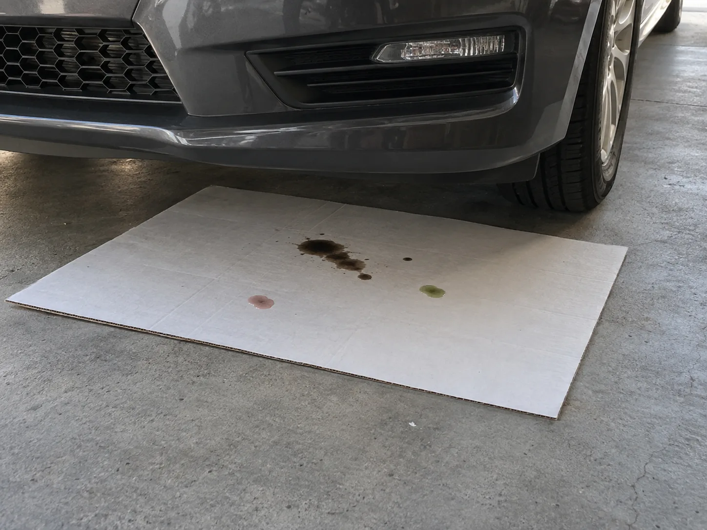
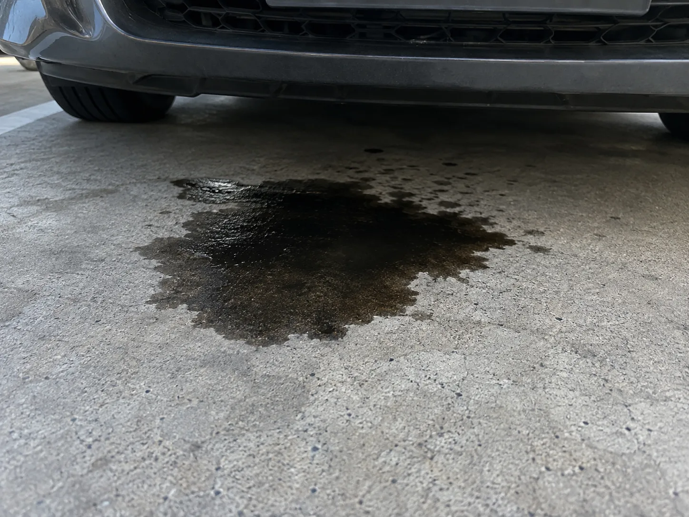
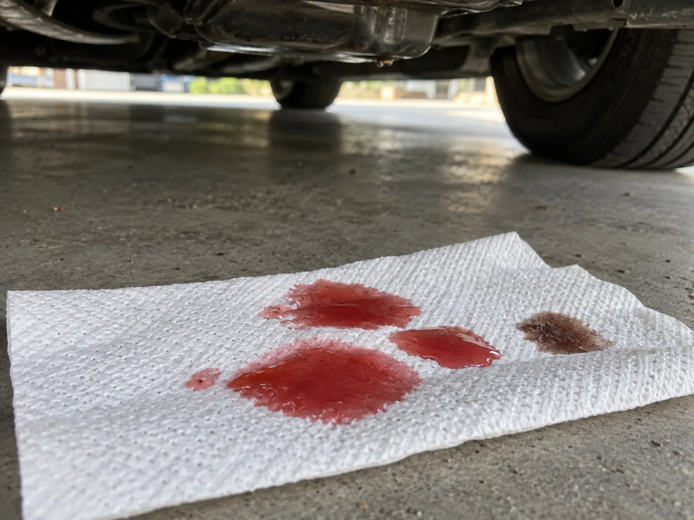
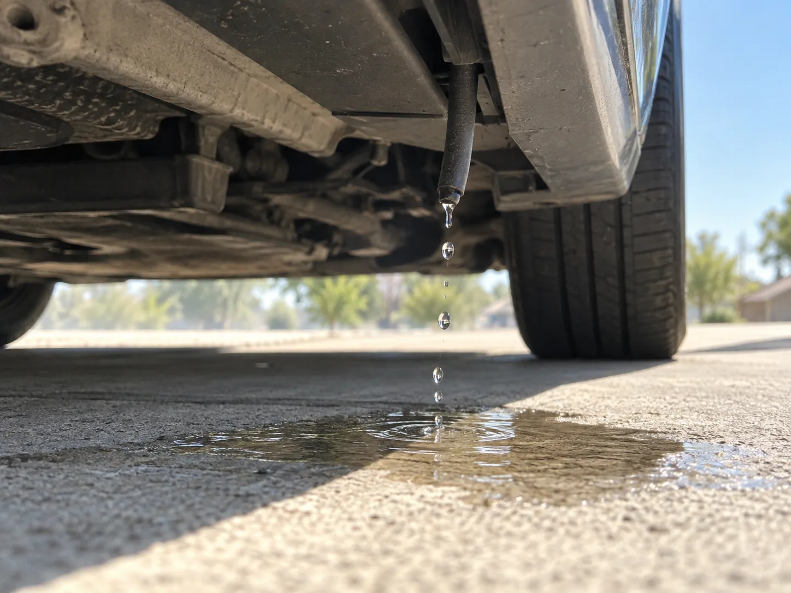
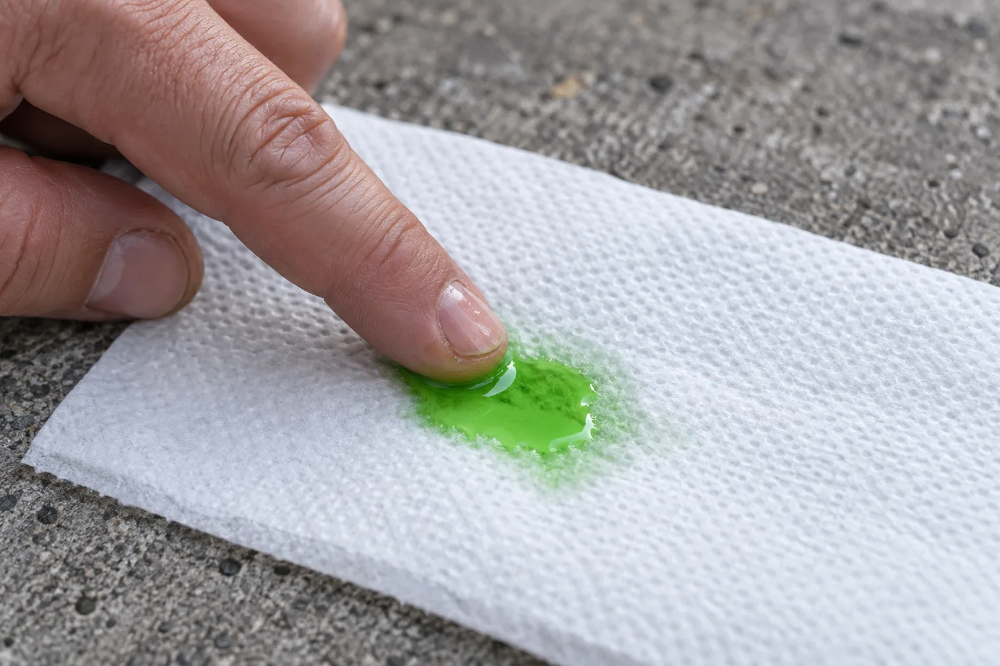
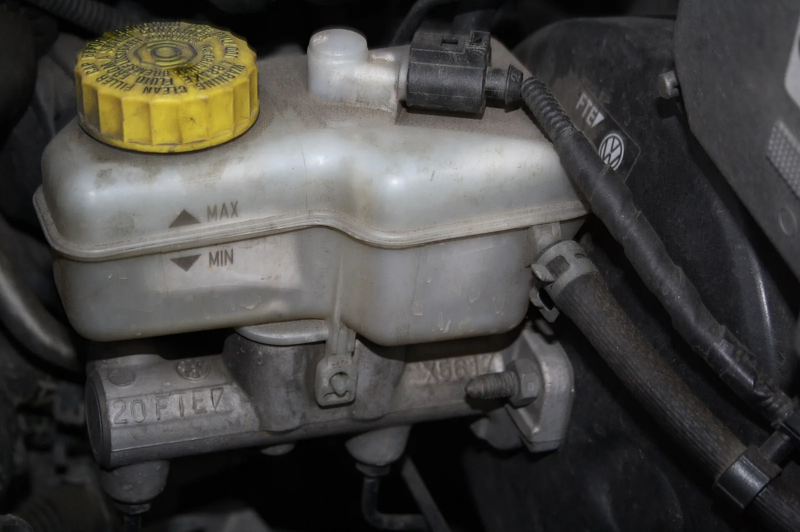
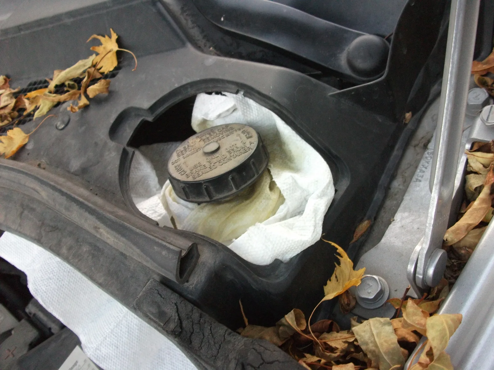

▲ 차 앞쪽 아래에 흰 골판지를 깔아 두면 떨어진 액체의 색과 위치가 한눈에 보인다. 검은 방울, 분홍빛 방울, 연두빛 방울이 각각 다른 곳에 떨어져 있다 이미지=AI 생성
아침에 차를 빼다가 주차 자리 바닥에 못 보던 얼룩을 발견했다면, 바로 정비소부터 찾기 전에 5분만 들여다보자. 얼룩의 색깔과 떨어진 위치, 냄새와 촉감만으로도 어떤 액체가 어디서 새는지 대부분 짐작할 수 있다. 여름철 앞쪽 바닥의 투명한 물처럼 걱정할 필요가 없는 경우도 많지만, 몇몇 색깔은 그 자리에서 운전을 멈춰야 하는 신호다. 각 액체의 교체 주기는 다른 기사에서 다뤘으니, 여기서는 얼룩으로 원인을 알아내고 지금 할 일만 정리했다.
1. 먼저 확인할 것 — 종이 깔기, 위치, 냄새·촉감
콘크리트나 아스팔트 위에서는 액체 색을 제대로 보기 어렵다. 바닥 자체가 회색이고 먼지가 섞이기 때문이다. GS칼텍스 킥스 블로그는 "차량 아래에 박스나 신문지 등 젖었을 때 쉽게 식별이 가능한 종이류"를 두고 살펴보라고 안내한다. 순서는 이렇다.
- 평평한 곳에 주차하고 흰 골판지(택배 상자를 펼친 것이면 충분)나 신문지를 깐다. 앞범퍼 바로 아래부터 차 중앙까지 덮으면 대부분의 누유 지점이 들어간다. 뒤쪽이 의심되면 뒷바퀴 사이까지 한 장 더 깐다.
- 종이 모서리에 '앞' 방향과 앞바퀴 위치를 펜으로 표시해 둔다. 아침에 종이를 빼냈을 때 방울이 차의 어느 지점 아래였는지 알 수 있다.
- 하룻밤 그대로 둔다. 주행 직후 몇 분만 봐도 흔적이 나오는 경우가 있지만, 미세한 누유는 시간이 지나야 모인다.
- 아침에 종이를 빼서 밝은 곳에서 사진부터 찍는다. 정비소에 보여줄 가장 좋은 자료다.
- 종이에 밴 방울을 흰 키친타월로 한 번 더 찍어 색을 보고, 손끝으로 살짝 문질러 물처럼 묽은지, 기름처럼 미끈한지 확인한다. 냄새도 맡아 본다. 확인 뒤에는 손을 비누로 씻는다.
▲ 휴대폰 플래시로 차 밑을 비춰 보는 운전자. 바닥 얼룩 바로 위에 젖은 부품이나 방울이 맺힌 곳이 있는지 함께 살핀다 이미지=AI 생성
얼룩 위치로 먼저 좁히기
액체는 대개 새는 곳 바로 아래로 떨어진다. 차 구조가 제각각이라 절대적이지는 않지만, 위치만으로도 후보를 꽤 줄일 수 있다.
- 차 앞쪽 가운데(엔진 아래): 엔진오일, 냉각수(앞쪽 라디에이터 부근), 전륜구동 차의 변속기 오일
- 앞쪽 조수석 발밑 부근: 에어컨 응축수. 여름에 에어컨을 쓴 뒤라면 거의 이것이다
- 바퀴 바로 안쪽: 브레이크액. 킥스 블로그는 브레이크액 누유 위치로 '휠 안쪽'을 꼽는다
- 차 중앙: 후륜구동 차의 변속기 오일, 배기관을 타고 흐른 액체
- 차 뒤쪽: 연료탱크·연료 라인, 뒷바퀴 브레이크. 배기구(머플러) 끝에서 떨어지는 맑은 물방울은 대개 배기가스 속 수증기가 식은 응축수다
냄새와 촉감으로 한 번 더 가르기
색이 애매할 때는 냄새와 촉감이 결정적이다. 물처럼 묽고 냄새가 없으면 에어컨 물, 묽은데 달콤한 냄새가 나면 냉각수, 알코올·세제 냄새면 워셔액이다. 손끝이 미끈하게 번들거리면 오일류(엔진오일·변속기 오일·브레이크액)이고, 코를 찌르는 기름 냄새가 나며 금방 마르면 연료다. 킥스 블로그는 엔진오일에 대해 "미끈거리고 고무 탄 냄새"가 난다고 설명한다.
2. 색깔·위치별 진단표 — 당장 운행해도 될까
아래 표가 이 기사의 핵심이다. 오일 제조사 블로그와 정비업체 가이드가 공통으로 제시하는 내용을 기준으로 정리했다.
| 색깔·특징 | 주로 떨어지는 위치 | 의심 액체 | 당장 운행 가능? | 할 일 |
|---|---|---|---|---|
| 투명, 물처럼 묽고 냄새 없음 | 앞쪽 조수석 발밑 부근 | 에어컨 응축수 | 가능(정상) | 할 일 없음. 에어컨을 안 썼는데도 계속 떨어지거나 실내 바닥이 젖으면 점검 |
| 검정·짙은 갈색, 미끈, 탄 냄새 | 차 앞쪽 가운데(엔진 아래) | 엔진오일 | 조건부 — 몇 방울이고 오일량 정상이면 정비소까지는 가능 | 딥스틱으로 오일량 확인. L(최소) 근처거나 오일 경고등이 켜지면 운행 중단 후 견인 |
| 빨강·분홍·붉은 갈색, 기름기 있음 | 앞쪽~차 중앙(구동 방식에 따라 다름) | 자동변속기 오일, 유압식 파워스티어링 오일 | 조건부 — 방울 수준이면 가까운 정비소까지 | 변속 충격·미끄러짐, 핸들이 무거워지면 운행 중단. 가능한 한 빨리 점검 |
| 초록·주황·분홍·노랑 등 선명한 색, 묽고 달콤한 냄새 | 차 앞쪽(라디에이터·엔진 부근) | 냉각수(부동액) | 소량이면 조건부, 다량이면 불가 | 식은 뒤 보조탱크 수위 확인. 수온계가 오르거나 경고등이 뜨면 즉시 정차 |
| 연한 노랑~갈색, 식용유처럼 미끈 | 바퀴 안쪽, 엔진룸 뒤쪽(운전석 쪽) | 브레이크액 | 불가 | 운전하지 말고 견인·긴급출동. 브레이크 경고등, 페달이 깊이 들어가는지 확인 |
| 파랑(일부 초록·분홍), 물처럼 묽고 알코올 냄새 | 앞범퍼 모서리 부근 | 워셔액 | 가능 | 탱크·호스 점검. 시야 확보에 필요하니 너무 미루지 말 것 |
| 무색~연한 색, 휘발유·경유 냄새, 빨리 증발 | 차 뒤쪽(연료탱크), 엔진룸 | 연료 | 불가 | 시동 금지, 주변 불씨 차단 후 긴급출동 |
색깔은 어디까지나 '단서'다. 냉각수는 제조사와 제품에 따라 초록·노랑·주황·분홍·파랑·보라 등으로 다르고(킥스 블로그, Jiffy Lube), 워셔액도 파랑이 흔하지만 초록 등 다른 색이 있다. 오일류는 오래 쓸수록 짙어져 새 변속기 오일은 선명한 빨강이어도 오래된 것은 붉은 갈색에 가깝다. 특히 분홍빛 얼룩은 변속기 오일일 수도, 분홍색 냉각수일 수도 있다. 이때는 미끈한 기름기(변속기 오일)냐, 물처럼 묽고 달콤한 냄새(냉각수)냐로 가르고, 가장 확실한 방법은 보닛을 열어 각 탱크의 액체 색을 얼룩과 비교하는 것이다. 한편 전동식 스티어링(MDPS)을 쓰는 최근 차량은 파워스티어링 오일 자체가 없다(불스원).

▲ 차 앞쪽 가운데 아래에 번진 검은 오일 얼룩. 엔진 바로 아래에 이런 번들거리는 얼룩이 생기면 엔진오일 누유를 먼저 의심한다 이미지=AI 생성

▲ 흰 키친타월에 스민 붉은 방울과 붉은 갈색 방울. 번들거리는 붉은 기름은 자동변속기 오일 계열을 의심하는 단서이고, 오래된 오일일수록 갈색에 가까워진다 이미지=AI 생성

▲ 에어컨 배수관에서 떨어지는 투명한 물방울. 색과 냄새가 없고 물처럼 묽다면 정상적인 응축수다 이미지=AI 생성
📍 여름철 '앞쪽의 물'은 걱정하지 않아도 된다
에어컨을 켜면 차가운 증발기 표면에 공기 중 수분이 맺혀 차 밖으로 배출된다. 차가운 유리컵 겉에 물방울이 맺히는 것과 같은 원리다. 마이클(2023.8)과 이코노믹리뷰는 이 물이 주로 차 앞부분, 조수석 쪽에 떨어지며 시스템이 정상적으로 작동한다는 뜻이라고 설명한다. 다만 색이나 냄새가 있다면 물이 아니다. 비 온 날이나 세차 뒤 실내 천장이나 발밑이 젖는다면 에어컨 물이 아니라 배수구 문제일 수 있으니 선루프 배수구 점검 기사를 참고하자.

▲ 흰 키친타월 위 초록색 방울을 손끝으로 찍어 보는 모습. 물처럼 묽으면서 달콤한 냄새가 나면 냉각수일 가능성이 크다 이미지=AI 생성
3. 특히 위험한 신호 — 이럴 땐 운행을 멈춘다
대부분의 누유는 '가까운 정비소까지 조심해서 가면 되는' 수준이지만, 세 가지는 예외다.
① 브레이크액 — 연한 노랑, 바퀴 안쪽
브레이크액은 새것일 때 연한 노란빛이고 오래되면 갈색으로 짙어진다. 식용유처럼 미끈하고, 바퀴 안쪽이나 엔진룸 뒤쪽 운전석 쪽 아래에서 발견되는 경우가 많다. Atlantic Tire와 메르세데스-벤츠 딜러 정비 가이드는 모두 브레이크액으로 보이는 누유가 있으면 "고칠 때까지 운전하지 말라"고 안내한다. 브레이크는 유압으로 작동하기 때문에 액이 새면 제동력이 떨어진다. 현대차 싼타페 취급설명서도 "브레이크액이 부족할 때는 브레이크가 제대로 작동하지 않을 수 있습니다"라고 적고 있고, 불스원은 브레이크액을 운전자의 생명과 직결되는 액체로 꼽는다.
바닥 얼룩 말고도 차가 보내는 신호가 있다. 제조사 취급설명서에 나오는 내용을 기준으로 아래를 확인한다.
- 브레이크 경고등: 현대차 취급설명서는 파킹 브레이크를 풀고 시동을 걸었는데도 브레이크 경고등이 꺼지지 않으면 브레이크액이 부족하지 않은지 점검하라고 안내한다. 보충해도 계속 켜져 있으면 서비스센터 점검 대상이다. 주행 중에 켜지면 브레이크 계통 이상 신호이니 안전한 곳에 차를 세운다
- 페달이 평소보다 깊이 들어감: 기아 K5 하이브리드 취급설명서는 브레이크 기능에 이상이 생기면 "정상 상태보다 브레이크 페달 조작량이 길어질 수 있으며, 제동거리가 길어질 수 있다"고 설명한다. 정차한 채 페달을 밟아 봤을 때 평소보다 쑥 들어간다면 누유를 의심할 근거가 된다
- 탱크 수위가 MIN 아래: 브레이크액은 패드가 닳으면서 천천히 줄어드는 것이 정상이지만, 현대차 취급설명서는 최소선(MIN) 이하이면 서비스센터에서 점검을 받으라고 한다. 바닥 얼룩과 수위 저하가 함께 보이면 누유 가능성이 크다
- 하나라도 해당하면 운전하지 말고 보험사 긴급출동이나 견인을 부른다

▲ 엔진룸 안쪽 브레이크액 탱크. 반투명한 탱크 옆면에 MAX·MIN 눈금이 새겨져 있어 밖에서 수위를 확인할 수 있다 ⓒ Frettie / Wikimedia Commons (CC BY 3.0)

▲ 브레이크 정비 중 탱크 주변에 받쳐 둔 종이타월에 밴 브레이크액. 연한 노란빛을 띤다 ⓒ dave_7 / Wikimedia Commons (CC BY 2.0)
② 연료 — 휘발유·경유 냄새
휘발유는 거의 무색이라 색으로는 물과 헷갈리기 쉽지만 냄새가 확실하고 금방 증발한다. 메르세데스-벤츠 딜러 가이드는 휘발유로 의심되면 차를 운전하지 말라고 안내한다. 연료는 불이 붙을 수 있는 물질이므로 시동을 걸지 말고, 담배·라이터 등 불씨를 멀리하고, 지하주차장이라면 관리실에 알린 뒤 긴급출동을 부른다. 주유 직후 주유구 주변이 살짝 젖은 정도라면 넘친 연료일 수 있지만, 주차 뒤에도 냄새가 계속되거나 바닥에 고인다면 누유로 보고 조치한다.
③ 다량의 냉각수 — 웅덩이, 수온계 상승
냉각수 몇 방울은 호스 이음부의 미세 누수일 수 있지만, 밤사이 웅덩이가 생길 정도라면 엔진 과열로 이어질 수 있다. Jiffy Lube는 냉각수 누유를 방치하면 큰 엔진 문제로 이어진다고 경고하고, Atlantic Tire는 과열과 헤드 개스킷 손상을 꼽는다. 계기판 수온계가 평소보다 올라가거나 냉각수 경고등이 켜지면 즉시 안전한 곳에 세우고 시동을 끈다. 엔진이 뜨거울 때 라디에이터나 보조탱크 캡을 열면 뜨거운 냉각수가 뿜어져 나올 수 있으니 반드시 식힌 뒤 확인한다. 보충 방법과 색 구분은 냉각수 가이드와 냉각수 색깔 기사에 정리해 두었다.
▲ 비 온 날 포장 바닥의 기름 얼룩. 물과 섞이지 않고 표면에 무지갯빛 막이 생기면 오일이나 연료 같은 기름 성분이다 ⓒ Roger McLassus / Wikimedia Commons (CC BY-SA 3.0)
📍 하이브리드·전기차는 이렇게 다르다
하이브리드는 엔진이 있으므로 위 진단표를 그대로 적용하면 된다. 전기차는 엔진오일이 없어 엔진오일에 의한 검은 얼룩은 생기지 않는다. 대신 KG모빌리티 공식 블로그에 따르면 전기차도 감속기 오일(윤활·냉각용)과 냉각수, 브레이크액을 쓴다. 토레스 EVX의 경우 모터룸에 배터리·실내 난방용과 구동계·충전용 냉각수가 따로 들어간다. 그러니 전기차 아래 기름기 있는 얼룩은 감속기 오일, 선명한 색의 묽은 액체는 냉각수 계통을 의심하면 된다. 얼룩을 확인할 때도 주의할 점이 있다. 기아 봉고Ⅲ EV 취급설명서는 "고전압의 전선(주황색)과 커넥터 그리고 모든 전기 부품 및 장치를 만지지 마십시오"라며 감전으로 다칠 수 있다고 경고한다. 얼룩은 바닥에 깐 종이로만 확인하고, 주황색 케이블이나 배터리 팩 주변은 손대지 말고 제조사 서비스센터에 맡기자.
4. 이것만은 하지 말자
⚠️ 하면 안 되는 것
· 연료 냄새가 나는데 시동 걸어 보기 — 불꽃 하나로 불이 붙을 수 있다. 확인은 시동을 끈 상태에서만
· 엔진이 뜨거울 때 냉각수 캡 열기 — 압력이 걸린 뜨거운 냉각수가 뿜어져 화상을 입을 수 있다
· 브레이크액 의심 얼룩을 보고도 '가까우니까' 몰고 가기 — 제동력은 예고 없이 떨어진다. 견인을 부르자
· 액체를 맛보거나 맨손으로 오래 만지기 — 냉각수는 달콤한 냄새가 나지만 독성이 있다. 확인 뒤 손을 씻고, 반려동물·아이가 핥지 않도록 얼룩을 닦아 둔다
· 원인을 모른 채 아무 액체나 보충하기 — 냉각수 탱크에 다른 액체를 넣거나 규격이 다른 오일을 넣으면 고장을 키운다
· 얼룩을 물로 씻어 없애고 잊어버리기 — 사진과 위치 기록 없이 지우면 정비소에서 원인을 찾기 더 어렵다
· 차 밑에 몸을 넣어 들여다보기 — 잭만으로 받친 차 아래에 들어가는 것은 위험하다. 바깥에서 플래시로 비춰 보는 것으로 충분하다
5. 정비소 가는 기준과 전달할 정보
| 상황 | 권장 조치 |
|---|---|
| 투명·무취의 물, 에어컨 사용 뒤 앞쪽 | 정상. 조치 불필요 |
| 검정·빨강 계열 오일이 하룻밤 몇 방울, 경고등·이상 증상 없음 | 며칠 안에 일반 정비소 예약. 그 사이 오일량을 수시로 확인 |
| 얼룩이 매일 커지거나 새 종이에 금방 다시 생김 | 누유 속도가 빠르다는 뜻 → 당일~이튿날 점검 |
| 냉각수 웅덩이, 수온계 상승, 변속 이상, 핸들 무거움 | 무리해 운행하지 말고 견인 또는 긴급출동 |
| 브레이크액 의심, 연료 냄새 | 운행 금지 → 보험사 긴급출동·견인 |
웅덩이 크기는 '몇 cm 이상이면 위험' 같은 공인 기준이 따로 없다. 액체 종류에 따라 위험도가 크게 달라서, 브레이크액은 몇 방울이라도 운행 중단 사유이고 에어컨 물은 웅덩이가 커도 정상이기 때문이다. 그래서 크기보다는 변화를 본다. Atlantic Tire는 "몇 방울이던 것이 더 큰 웅덩이로 커지면 문제가 악화되고 있다는 신호"라고 설명한다. 새 종이를 깔 때마다 얼룩 크기를 사진으로 남겨 두면 누유가 빨라지는지 쉽게 비교할 수 있다.
정비소에 전화하거나 방문할 때는 아래 네 가지만 정리해 가도 진단이 훨씬 빨라진다.
- 색: 흰 종이·휴지 위에서 본 색(예: "연한 노랑", "붉은 갈색")과 촉감·냄새("미끈하다", "달콤한 냄새")
- 위치: 차 앞쪽 가운데/운전석 앞바퀴 안쪽/차 중앙/뒤쪽 등. 종이에 표시해 둔 앞바퀴 기준으로 설명한다
- 양과 속도: "하룻밤에 동전만 한 얼룩 두세 개", "아침마다 손바닥만 한 웅덩이"처럼 구체적으로. 언제부터 생겼는지도
- 사진: 얼룩이 묻은 종이 전체, 가까이 찍은 방울, 차와 얼룩이 함께 나온 사진. 경고등이 켜졌다면 계기판 사진도
액체별 교체 주기나 관리법이 궁금하다면 미션오일 무교환 기사, 브레이크액 교체 주기 기사를 참고하자.
6. 정리 — 종이 한 장, 색·위치·냄새 세 가지
첫째, 흰 골판지를 밤새 깔아 색과 위치를 확인한다. 방울은 흰 휴지로 찍어 색을 보고, 미끈한지 묽은지, 어떤 냄새인지 확인한 뒤 사진으로 남긴다.
둘째, 투명·무취의 앞쪽 물은 에어컨 응축수, 파란 묽은 액체는 워셔액으로 급하지 않다. 검정은 엔진오일, 빨강·붉은 갈색은 변속기 오일, 선명한 색에 달콤한 냄새는 냉각수이니 오일량·수위를 확인하고 정비소로 간다.
셋째, 연한 노랑의 미끈한 액체(브레이크액)와 연료 냄새, 웅덩이 수준의 냉각수는 운행을 멈춘다. 이때는 직접 몰고 가지 말고 긴급출동이나 견인을 부르는 것이 가장 안전하다.